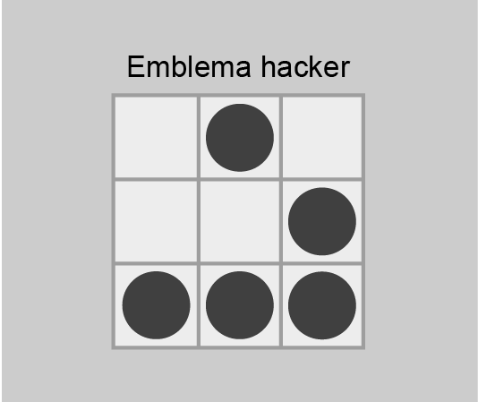

Administració de commutadors
Plug-n-Play
Es diu que un dispositiu és Plug-and-Play quan es pot connectar a un ordinador sense haver de configurar res.
Els commutadors són dispositius que poden funcionar de manera Plug-and-Play, es connecten en una xarxa i comencen a funcionar sense cap tipus de configuració. L’administrador de la xarxa, però, pot fer diverses tasques de configuració i administració per millorar el funcionament del commutador. Administrar les taules MAC, els fitxers de configuració i actualitzar la versió del sistema operatiu són tasques comunes dels administradors.
Actualment, la seguretat a les xarxes també s’ha convertit en un objectiu prioritari. Un administrador ha de configurar els commutadors per intentar protegir-los contra atacs d’usuaris malintencionats.
Seqüència d'arrencada del commutador
Quan s’engega un commutador el primer que es fa és carregar el programari del carregador d’arrencada. Aquest carregador és un petit programa que es troba emmagatzemat en la ROM del commutador i s’executa quan aquest s’engega.
El carregador d’arrencada fa les funcions següents:
- S’encarrega de la inicialització a baix nivell de la CPU. Inicialitza els registres de la CPU que controlen on està assignada la memòria física, la quantitat de memòria i la seva velocitat.
- Du a terme el procés POST d’autodiagnòstic pel subsistema de la CPU. Fa una comprovació de la memòria de la CPU.
- Inicialitza el sistema d’arxius flaix en la targeta del sistema.
- Carrega una imatge predeterminada del programari del sistema operatiu en la memòria i engega el commutador. En primer lloc, el carregador d’arrencada intentarà trobar la imatge de l’IOS de Cisco en el commutador cercant primer en un directori que té el mateix nom que l’arxiu imatge. Si no l’hi troba, cercarà en cada subdirectori abans de continuar la cerca en el directori original.
A continuació el sistema operatiu s’encarrega d’inicialitzar les interfícies (els ports) consultant els fitxers de configuració del sistema operatiu. Aquest fitxers de configuració es troben en la memòria flaix.
Inicialització d'emergència
El carregador d’arrencada també proporciona un mètode d’arrencada del commutador en cas que el sistema operatiu no es pugui utilitzar. El carregador d’arrencada permet arrencar el dispositiu amb línia d’ordres per poder fer canvis en els fitxers emmagatzemats en la memòria flaix abans de carregar el sistema operatiu. Des d’aquesta línia d’ordres es pot restablir una contrasenya, tornar a instal·lar una imatge del sistema operatiu o formatar el sistema d’arxius flaix.
Configuració de la interfície d'administració
Tot i que els commutadors són dispositius de xarxa que corresponen a la capa 2 del model OSI (capa d’enllaç), alguns dels commutadors permeten dur a terme una configuració TCP/IP d’aquests. El motiu principal és que configurant el commutador a nivell de xarxa (capa 3 del model OSI) podem fer connexions remotes amb aquest per mitjà de Telnet i SSH.
Configuració IP?
La configuració de capa 3 del model OSI no sempre és necessària. És imprescindible si voleu configurar el commutador remotament per mitjà d’una connexió Telnet o SSH, o si voleu fer servir un servidor TFTP. En un altre cas, no necessitareu configurar l’adreça IP d’un commutador.
Per configurar el commutador s’ha de proveir de l’adreça IP, la màscara de xarxa i un encaminador per defecte. L’adreça IP s’assigna a una interfície virtual anomenada LAN virtual (VLAN). Posteriorment s’assignarà aquesta LAN virtual a un o més ports del commutador.
Per defecte, l’administració del commutador es fa mitjançant la primera LAN virtual (VLAN1), encara que se’n pot fer servir qualsevol altra per configurar-lo.
Configurar la interfície d'administració
Per configurar l’adreça IP i la màscara de xarxa de la LAN virtual heu d’entrar en el mode de configuració d’interfície, en aquest cas de la VLAN que voleu configurar. L’ordre per configurar l’adreça IP i la màscara és ip address adreça IP màscara de xarxa.
Una vegada heu configurat l’adreça IP i la màscara, s’ha d’activar la interfície amb l’ordre no shutdown.
Aquí teniu un exemple de tots els passos per fer-ho:
Switch>enable Switch#configure terminal Enter configuration commands, one per line. End with CNTL/Z. Switch(config)#interface vlan 10 Switch(config-if)#ip address 192.168.0.155 255.255.255.0 Switch(config-if)#no shutdown Switch(config-if)#end Switch# %SYS-5-CONFIG_I: Configured from console by console
A continuació s’ha d’assignar un port perquè treballi des d’aquesta VLAN. Heu d’entrar al mode de configuració de la interfície que voleu configurar i fer servir l’ordre switchport ,que serveix per configurar les característiques de commutació d’un port. Aquestes són les opcions més importants de l’ordre switchport:
- access: canvia les característiques del mode d’accés de la interfície.
- mode: estableix el mode de funcionament troncal de la interfície.
Les diferents opcions del mode troncal són:
- access: estableix el mode a accés.
- trunk: estableix el mode a troncal.
- dynamic: estableix el mode troncal dinàmicament a model troncal o d’accés.
- native: estableix les característiques natives quan la interfície treballa en mode troncal.
- nonegotiate: serveix per dir que la interfície no farà servir el protocol d’autonegociació del port.
- port-security: ordres relatives a la seguretat del port.
- trunk: estableix el funcionament troncal del port.
Hem de configurar el port per funcionar amb mode d’accés i donar-hi accés a la LAN virtual que hem configurat. En aquest cas configurarem la interfície FastEthernet 0/20 del commutador:
Switch#configure terminal Enter configuration commands, one per line. End with CNTL/Z. Switch(config)#interface FastEthernet 0/20 Switch(config-if)#switchport mode access Switch(config-if)#switchport access vlan 10 %LINK-5-CHANGED: Interface Vlan10, changed state to up % Access VLAN does not exist. Creating vlan 10 Switch(config-if)#exit Switch(config)#
Podeu comprovar l’estat de la interfície fent servir l’ordre show ip interface, que mostrarà la configuració de les VLAN.
Switch#show ip interface Vlan1 is administratively down, line protocol is down Internet protocol processing disabled Vlan10 is up, line protocol is up Internet address is 172.17.99.11/24 Broadcast address is 255.255.255.255 Address determined by setup command MTU is 1500 bytes Helper address is not set Directed broadcast forwarding is disabled Outgoing access list is not set Inbound access list is not set Proxy ARP is enabled Local Proxy ARP is disabled Security level is default Split horizon is enabled ICMP redirects are always sent ICMP unreachables are always sent ICMP mask replies are never sent IP fast switching is disabled IP fast switching on the same interface is disabled IP Null turbo vector IP multicast fast switching is disabled
Quan activeu una VLAN manualment, la VLAN per defecte (la 1) es desactiva automàticament. També podeu veure la informació de manera resumida amb l’ordre show ip interface brief.
Configuració de l'encaminador per defecte
El pas següent és la configuració del commutador perquè pugui enviar paquets IP a altres xarxes per mitjà d’un encaminador. Per això heu de configurar un encaminador per defecte. De nou, aquesta configuració és innecessària en un commutador que no farà connexions per Telnet o SSH.
Fixeu-vos en la figura. L’ordinador A fa una connexió Telnet amb el commutador switch1. El commutador switch1 necessita configurar l’adreça de l’encaminador router1 per poder enviar paquets de tornada a l’ordinador A, ja que aquest es troba en una LAN diferent de la LAN del commutador switch1.
Gateway
Gateway és un terme en desús per referir-se als encaminadors. En alguns sistemes i programes s’ha fet la traducció literal ‘porta d’enllaç’, però també està en desús. En aquests materials farem servir la paraula encaminador o la seva versió anglesa router.
L’ordre que serveix per configurar l’encaminador per defecte és ip default-gateway IP_de_l’encaminador des del mode de configuració global. Una vegada heu configurat l’encaminador per defecte podeu fer una prova de connectivitat amb l’ordre ping IP_de_l’encaminador.
Per exemple:
Switch(config)#ip default-gateway 192.168.15.1 Switch# %SYS-5-CONFIG_I: Configured from console by console Switch#ping 192.168.15.1 Type escape sequence to abort. Sending 5, 100-byte ICMP Echos to 192.168.15.1, timeout is 2 seconds: .!!!! Success rate is 80 percent (4/5), round-trip min/avg/max = 19/28/32 ms
ping
L’ordre ping envia una sèrie de missatges ICMP echo request a una destinació determinada. Aquesta destinació tornarà un missatge de resICMP echo reply. Generalment es fa servir per provar la connectivitat de dos hosts.
L’ordre ping envia cinc missatges ICMP echo request, i ens dóna estadístiques dels paquets enviats i rebuts.
Configuració de Telnet i SSH
Hi ha casos en què la configuració del commutador per mitjà del port de consola no resulta adequada. Per exemple, penseu que treballeu en una empresa gran que té diferents xarxes locals en cada planta d’un edifici. Si voleu canviar la configuració (per exemple, la contrasenya) a tots els commutadors, heu d’anar un a un i fer una connexió física amb un cable al port de consola per poder-los configurar. Seria més ràpid si l’administrador de la xarxa pogués configurar tots els commutadors des d’un ordinador connectat a la xarxa.
Telnet i SSH ens permeten fer una connexió remota del commutador per poder-lo configurar.
Configuració de Telnet
Els primers models de commutadors únicament feien servir aquest mètode per connectar remotament, per això encara està molt estès.
Amb Telnet es pot entrar en una VTY (terminal virtual) del commutador. En principi les línies VTY són insegures, ja que admeten l’accés de qualsevol usuari que comenci sessió amb aquestes. Per aquest motiu s’han de configurar contrasenyes per restringir l’accés per Telnet.
Vegem a continuació la seqüència d’ordres per establir la contrasenya:
Switch(config)#line vty 0 4 Switch(config-line)#password clau12345 Switch(config-line)#login
Per configurar la contrasenya del commutador heu d’entrar en el mode de configuració de VTY des del mode de configuració global. Molts dispositius de xarxa Cisco tenen cinc línies VTY i s’ha de configurar la contrasenya d’entrada per a totes. L’ordre line VTY 0 4 estableix que s’estan configurant totes les línies de VTY (de la 0 a la 4).
L’ordre per establir la contrasenya és password contrasenya. L’ordre login serveix per habilitar la petició de la contrasenya quan l’usuari inicia sessió. Per admetre connexions sense autenticació de contrasenya s’ha de fer servir l’ordre no login, però això és un mètode de configuració insegur, ja que qualsevol usuari pot entrar i configurar el commutador.
Una vegada establerta la contrasenya es pot fer una connexió per Telnet al commutador. Es demanarà la contrasenya en fer login. Per exemple això és el que veuríem des del host on fem la connexió:
$>telnet 192.168.0.1 Trying 192.168.0.1 ...Open User Access Verification Password: Switch>
Telnet és el mètode per defecte de connexió a VTY, per això no cal configurar-lo per fer-lo servir. Però si hem configurat l’accés per VTY amb SSH i volem tornar a fer servir Telnet, l’haurem de configurar manualment.
Configuració d'SSH
El problema principal de Telnet, és que envia totes les comunicacions de manera oberta per la xarxa sense encriptar. Qualsevol usuari que faci servir un programa de rastreig pot analitzar aquestes trames i veure’n el contingut. Per aquest motiu és millor fer servir ssh, ja que encripta les dades abans d’enviar-les a la xarxa.
La funció de configuració d’SSH no està implantada al simulador Packet Tracer i, per tant, no es pot provar.
Per fer funcionar ssh s’han de generar claus RSA (pel nom dels seus tres autors: Rivest, Shamir i Adleman). Per generar les claus RSA encriptades es fa servir l’ordre crypto key generate rsa.
Aquests són els passos a seguir per configurar el commutador com a servidor SSH:
- Entrar en el mode de configuració global amb configure terminal.
- Configurar un nom de host per al commutador amb hostname nom_commutador.
- Configurar el domini del commutador amb ip domain-name nom_commutador.
- Habilitar el servidor SSH i generar les claus RSA amb crypto key generate rsa.
- Escollir quina versió d’SSH volem que executi el commutador amb ip ssh version 2 . Si és possible, es recomana fer servir la versió 2 d’SSH, ja que utilitza uns algorismes d’encriptació de seguretat millors que els de la versió 1.
- Escollir el temps d’espera en segons amb l’ordre ip ssh time-out temps_en_segons. L’opció per defecte és cent vint segons, però es pot modificar. Aquest és el temps que permet el commutador perquè es facin totes les fases de connexió als clients.
- Especificar la quantitat de vegades que un client es pot autenticar en el servidor amb l’ordre ip ssh authentication-retries número_de_intents. Es pot escollir qualsevol valor entre 0 i 5 (3 és el valor per defecte).
- Configurar les línies TTY per limitar-ne l’accés únicament a SSH amb transport input ssh en la configuració de les línies VTY. Així s’eviten connexions al commutador que no siguin SSH.
Aquest seria el procés sencer per la configuració:
Switch#configure terminal Enter configuration commands, one per line. End with CNTL/Z. Switch(config)#hostname miswitch miswitch(config)# miswitch(config)#ip domain-name rtp.cisco.com miswitch(config)#crypto key generate rsa miswitch(config)#ip ssh version 2 miswitch(config)#ip ssh time-out 60 miswitch(config)#ip ssh authentication-retries 2 miswitch(config)#line vty 0 4 miswitch(config-line)#transport input SSH
Administració de les taules MAC
Els commutadors determinen si han d’enviar les trames per altres ports analitzant l’adreça de destinació de la trama. Aquesta adreça la cerquen en una taula interna anomenada taula d’adreces MAC, que conté les adreces MAC que es poden trobar per cada port.
Per visualitzar el contingut de la taula MAC del commutador feu servir l’ordre show mac-address-table, des del mode d’usuari o el mode d’execució privilegiat.
Per exemple, aquesta seria una taula MAC d’un commutador:
Mac Address Table ------------------------------------------- Vlan Mac Address Type Ports ---- ----------- -------- ----- 1 0060.2f98.0b6a DYNAMIC Fa0/1 1 012a.eff7.ac5d STATIC Fa0/2 1 0345.ae23.fe4a DYNAMIC Fa0/5 1 0056.735e.67a2 DYNAMIC Fa0/8 1 12ea.35a7.003e DYNAMIC Fa0/9 1 ff45.0020.24a3 DYNAMIC Fa0/11 1 0060.42a2.7352 DYNAMIC Fa0/14 1 1003.24a5.ee0f DYNAMIC Fa0/16
Aquestes adreces poden ser:
- Dinàmiques. Apreses automàticament pel commutador analitzant les adreces dins de les trames. Aquestes adreces expiren passat un temps si no es fan servir. El temps d’expiració per defecte és de tres cents segons. Si el temps d’expiració és molt curt, les adreces es podrien esborrar de la taula de manera prematura, la qual cosa produiria una propagació del trànsit per inundació innecessàriament. Si el temps d’expiració és molt llarg la taula es podria omplir d’adreces innecessàries que no es fan servir.
- Estàtiques. Configurades manualment per l’administrador de la xarxa. Aquestes adreces no expiren mai i el commutador sempre sap a quina interfície ha d’enviar les trames dirigides a aquesta adreça.
L’ordre per assignar una adreça MAC a la taula d’adreces MAC de manera estàtica és la següent:
mac-address-table static adreça MAC vlan {1-4096, ALL} interface id_de_la_interfície
Per exemple, des del mode de configuració global:
Switch(config)mac-address-table static 0060.a014.e06e vlan 1 interface FastEthernet 0/3
Fixeu-vos que aquesta adreça, en la taula d’adreces MAC que us mostra l’ordre show, està marcada com a estàtica.
Per esborrar una adreça MAC estàtica de la taula d’adreces MAC del commutador heu d’escriure la mateixa ordre precedida de no. Per exemple, per esborrar l’adreça MAC que hem afegit amb l’ordre anterior, hauríeu de executar:
Switch(config)no mac-address-table static 0060.a014.e06e vlan 1 interface FastEthernet 0/3
Administració dels fitxers de configuració
Els dispositius (tant els commutadors com els encaminadors) de xarxa Cisco tenen diferents tipus de memòries:
- Memòria RAM (random access memory, memòria d’accés aleatori). És la memòria sobre la qual treballa el dispositiu. Aquesta memòria és volàtil, per tant, quan s’apaga el dispositiu tot el seu contingut s’esborra.
- Memòria NVRAM (non volatile RAM, RAM no volàtil). És una memòria no volàtil, per tant, manté el contingut encara que s’apagui el dispositiu. En aquesta memòria es troben els fitxers de configuració del dispositiu.
- Memòria flaix. És una memòria no volàtil. Serveix com a memòria secundària per emmagatzemar altres fitxers com, per exemple, altres versions del sistema operatiu del dispositiu.
Els dispositius de xarxa necessiten dos tipus de fitxers per funcionar: el sistema operatiu i la configuració. El sistema operatiu serveix per fer funcionar el maquinari del dispositiu. Els fitxers de configuració serveixen per personalitzar i configurar les diferents opcions del dispositiu.
Hi ha dos fitxers de configuració en els dispositius Cisco:
- running-config (fitxer de configuració en execució). Aquest fitxer conté la configuració actual amb la qual s’està executant el sistema. Qualsevol canvi que es faci sobre la configuració del sistema per mitjà d’ordres de l’IOS es farà sobre aquest fitxer. El fitxer de configuració en execució es troba situat sobre la memòria RAM; per tant, quan s’apaga el dispositiu s’esborra.
- startup-config (fitxer de configuració d’arrencada). Aquest fitxer conté la configuració inicial del dispositiu. Situat en la memòria NVRAM, és un fitxer persistent, es manté el contingut quan es reinicia el dispositiu.
Podeu veure el contingut d’aquests fitxers amb l’ordre show. Per exemple, per veure el contingut del fitxer en execució podeu escriure:
Switch#show running-config
El resultat per a un commutador:
Building configuration... Current configuration : 1149 bytes ! version 12.1 no service timestamps log datetime msec no service timestamps debug datetime msec no service password-encryption ! hostname commutador_aula ! enable secret 5 $1$mERr$5jbOD5lHVUWxAAsNOD6eO/ enable password clau1234 ! ! ! interface FastEthernet0/1 switchport access vlan 2 switchport mode access duplex full speed 100 ! interface FastEthernet0/2 switchport access vlan 3 tx-ring-limit 100 ! interface FastEthernet0/3 ! interface FastEthernet0/4 [...] ! interface FastEthernet0/24 ! interface Vlan1 no ip address shutdown ! ! line con 0 ! line vty 0 4 login line vty 5 15 login ! ! end
Les línies que comencen pel caràcter ! es tracten com a comentaris. No s’ha de tenir en compte el contingut sencer d’una línia que comenci amb el caràcter !.
En les diferents parts del fitxer es pot veure l’espai per a les diferents configuracions del commutador. Fixeu-vos en la diferència de com estan emmagatzemades les contrasenyes password i secret; únicament secret està encriptada. Per aquest motiu es recomana fer servir secret sempre que estigui disponible.
En el procés d’arrencada del dispositiu es fa una còpia del fitxer de configuració d’arrencada (startup-config) des de l’NVRAM sobre el fitxer d’execució (running-config) en la RAM. És a dir, la configuració d’arrencada es converteix en la configuració d’execució.
Tots els canvis fets en la configuració del dispositiu únicament modificaran la configuració en execució. Si es vol que aquesta configuració sigui permanent, el que s’ha de fer és copiar el fitxer de configuració en execució sobre el fitxer de configuració d’arrencada,des del mode d’execució privilegiat, amb l’ordre:
Switch#copy running-config startup-config
És important estar segur que la configuració actual del dispositiu és correcta, ja que copiant-la al fitxer de configuració d’arrencada l’estem fent permanent (serà la configuració que es farà servir la propera vegada que s’arranqui el dispositiu). Si heu comés un error en la configuració del fitxer, el commutador tindrà una configuració incorrecta la propera vegada que arranqui.
En qualsevol moment es pot fer l’acció contrària. Imagineu, per exemple, que heu comés un error en fer els canvis en la configuració del dispositiu. Aquests canvis, en realitat, únicament han modificat el fitxer running-config. Podríeu esmenar l’error tornant a configurar el dispositiu o, més fàcil, copiar la configuració d’arrencada en el fitxer d’execució des del mode d’execució privilegiat amb:
Switch#copy startup-config running-config
Però aquesta ordre no sobreescriu completament la configuració en execució, sinó que únicament afegeix les ordres existents de la configuració d’arrencada a la configuració en execució. Per això, en alguns casos els resultats poden no ser els esperats.
Per assegurar-se que la configuració de l’execució és la que volem després d’haver copiat un fitxer de configuració en la configuració d’arrencada, el més adequat és reiniciar el commutador. Per a això feu servir l’ordre reload des del mode d’execució privilegiat.
En la figura podeu veure un resum del funcionament dels fitxers de configuració i els diferents tipus de memòria.
Desar diferents fitxers de configuració en disc
En alguns casos a l’administrador li pot interessar desar en memòria diferents configuracions del commutador en memòria no volàtil. Per exemple, es podria desar una configuració del commutador que faci servir VLAN amb enllaços troncals i una altra que no les faci servir.
En aquests casos la millor solució és desar els fitxers de configuració en la memòria flaix. Es pot fer la còpia en la memòria flaix indistintament des del fitxer running-config (fitxer de configuració en execució) o des de l’startup-config (fitxer de configuració d’arrencada).
L’ordre que heu de fer servir és copy startup-config flash. Us demanarà el nom del fitxer que es desarà en la memòria flaix:
Switch#copy startup-config flash: Destination filename [startup-config]? configuracio_vlan.bak 921 bytes copied in 0.416 secs (2213 bytes/sec) Switch#
Recordeu que quan modifiqueu el fitxer de configuració startup-config, perquè faci efecte, heu de reiniciar el commutador.
Per restaurar la configuració desada en flaix en alguns dels fitxers d’execució del commutador heu de fer servir l’ordre contrària. De nou us demanarà pel nom del fitxer que es troba en la flaix:
Switch#copy flash: startup-config Source filename []? configuracio_vlan.bak Destination filename [startup-config]? [OK] 921 bytes copied in 0.416 secs (2213 bytes/sec) Switch#
Esborrar fitxers de configuració
L’administrador té l’opció d’esborrar els fitxers de configuració del commutador. D’aquesta manera s’assegura que el commutador es configurarà la propera vegada que s’engegui.
Per esborrar el contingut de la configuració d’arrencada es pot fer servir l’ordre següent des del mode d’execució privilegiat erase startup-config.
Per esborrar un fitxer de configuració emmagatzemat en la memòria flaix feu servir delete flash:. Us demanarà el nom del fitxer a esborrar, per exemple:
Switch#delete flash: Delete filename []?configuracio_vlan.bak Delete flash:/configuracio_vlan.bak? [confirm]y Switch#
Gestió dels fitxers de configuració per TFTP
Una manera ràpida, flexible i segura d’administrar els fitxers de configuració dels commutadors és mitjançant el TFTP (trivial file transfer protocol, protocol de transferència de fitxers trivial). Amb el TFTP podem fer còpies de seguretat dels fitxers de configuració del commutador de manera remota i tenir-los disponibles des d’un altre ordinador.
Per poder fer servir el client de TFTP del commutador heu d’haver configurat una adreça IP per a una interfície del commutador.
El sistema Cisco IOS té incorporat un client FTP que permet fer connexions a un servidor que es trobi en la seva xarxa.
Fer una còpia de seguretat amb el TFTP
Fem servir l’ordre copy per fer una còpia d’un fitxer del commutador al servidor del TFTP, però en aquest cas especifiquem que la destinació no és un fitxer intern a la memòria flaix del commutador, sinó l’adreça del servidor TFTP. La sintaxi de l’ordre és copy fitxer_origen tftp:. El fitxer d’origen pot ser un dels fitxers de configuració del commutador (startup-config o running-config) o un fitxer de la memòria flaix. En aquest exemple, comprovem que la connectivitat amb el servidor és correcta i després copiem un fitxer de la memòria flaix al servidor TFTP:
Switch#ping 192.168.0.10
Type escape sequence to abort.
Sending 5, 100-byte ICMP Echos to 192.168.0.10, timeout is 2 seconds:
.!!!!
Success rate is 80 percent (4/5), round-trip min/avg/max = 15/27/32 ms
Switch#show flash:
Directory of flash:/
1 -rw- 3057198 <no date> c2950-i6q4l2-mz.121-22.EA4.bin
3 -rw- 856 <no date> no_vlan
2 -rw- 616 <no date> vlan.dat
64016384 bytes total (60957720 bytes free)
Switch#copy flash: tftp:
Source filename []? no_vlan
Address or name of remote host []? 192.168.0.10
Destination filename [conf_commutador]? commutador_central_no_vlan
Writing conf_commutador...!!
[OK - 856 bytes]
856 bytes copied in 0.416 secs (2723 bytes/sec)
Switch#
Restaurar una còpia de seguretat amb el TFTP
Per restaurar una còpia de seguretat d’un fitxer amb el TFTP el procés és similar. S’ha d’establir comunicació amb el servidor TFTP per copiar un fitxer del servidor TFTP al commutador (a la memòria flaix o a qualsevol dels fitxers de configuració). Per exemple:
Switch#copy tftp: flash: Address or name of remote host []? 192.168.0.10 Source filename []? commutador_central_no_vlan Destination filename [fitxer]? no_vlan Accessing tftp://192.168.0.10/fitxer... Loading fitxer from 192.168.0.10: ! [OK - 1117 bytes] 1117 bytes copied in 0.032 secs (34906 bytes/sec)
Actualitzar el sistema operatiu del commutador
Una tasca habitual de l’administrador de la xarxa és canviar o actualitzar el sistema operatiu dels dispositius de la xarxa. Potser el fitxer que conté el sistema operatiu s’ha fet malbé en la memòria i s’ha de tornar a carregar. També és possible que hagi sortit una altra versió del sistema operatiu i l’administrador de la xarxa la vulgui provar en els seus dispositius.
Per comprovar quina és la versió del sistema operatiu que executeu podeu fer servir l’ordre show version:
host#show version Cisco Internetwork Operating System Software IOS (tm) C2950 Software (C2950-I6Q4L2-M), Version 12.1(22)EA4, RELEASE SOFTWARE(fc1) Copyright (c) 1986-2005 by cisco Systems, Inc. Compiled Wed 18-May-05 22:31 by jharirba Image text-base: 0x80010000, data-base: 0x80562000 [...]
En aquest cas, la versió 12.1(22)EA4.
El procés d’actualització del sistema operatiu del commutador consta de tres passos:
- Carregar la nova imatge del sistema operatiu a la memòria del commutador.
- Configurar el commutador perquè carregui la nova versió del sistema operatiu quan s’engegui.
- Reiniciar el commutador.
La manera habitual de carregar la imatge del sistema operatiu és posar-la disponible mitjançant un servidor del TFTP. Un servidor del TFTP és un programari molt lleuger que es pot instal·lar fàcilment en qualsevol ordinador. Una vegada disponible, accedim des del commutador pel TFTP per copiar la imatge en la memòria flaix interna del commutador. Abans de copiar la imatge és important comprovar que disposem de suficient espai en la memòria flaix per albergar la nova imatge. Podeu fer això amb l’ordre show flash::
Switch#show flash:
Directory of flash:/
1 -rw- 3058048 <no date> c2950-i6q4l2-mz.121-22.EA4.bin
3 -rw- 1005 <no date> conf_commutador
4 -rw- 1117 <no date> no_vlan
2 -rw- 616 <no date> vlan.dat
60898994 bytes total (60956603 bytes free)
Al final podeu veure la quantitat d’espai utilitzada i la que queda lliure.
En aquest exemple suposarem que volem descarregar la nova imatge del sistema operatiu anomenada c2950-i6q4l2-mz.121-22.EA8.bin i que aquesta es troba en un ordinador on hem instal·lat un servidor TFTP. Aquest ordinador té l’adreça IP 192.168.0.10.
El pas següent seria fer una còpia del fitxer del servidor TFTP en la memòria flaix interna amb l’ordre copy tftp: flash:. Us demanarà les dades de l’adreça IP, el nom del fitxer en el servidor i el nom que voleu donar al fitxer en la memòria flaix del commutador.
Switch#copy tftp: flash: Address or name of remote host []? 192.168.0.10 Source filename []? c2950-i6q4l2-mz.121-22.EA8.bin Destination filename [c2950-i6q4l2-mz.121-22.EA8.bin]? Accessing tftp://192.168.0.10/c2950-i6q4l2-mz.121-22.EA8.bin.... Loading c2950-i6q4l2-mz.121-22.EA8.bin from 192.168.0.10: !!!!!!!!!!!!!!!!!!!!!!!!!!!!!!!!!!!!!!!!!!!!!!!!!!!!!!!!!!!!! [OK - 3117390 bytes] 3117390 bytes copied in 4.859 secs (641570 bytes/sec) Switch#
Podeu comprovar que teniu els dos fitxers:
Switch#dir flash:
Directory of flash:/
1 -rw- 3058048 <no date> c2950-i6q4l2-mz.121-22.EA4.bin
5 -rw- 3117390 <no date> c2950-i6q4l2-mz.121-22.EA8.bin
3 -rw- 0 <no date> conf_commutador
4 -rw- 1117 <no date> no_vlan
2 -rw- 616 <no date> vlan.dat
64016384 bytes total (57839213 bytes free)
El pas següent és indicar al commutador que volem que la propera vegada que s’engegui ho faci amb la nova versió del sistema operatiu. Per això fem servir l’ordre boot system fitxer amb la imatge del sistema operatiu.
Switch(config)#boot system flash:/c2950-i6q412-mz.121-22.EA8.bin Switch(config)#end Switch# %SYS-5-CONFIG_I: Configured from console by console Switch#copy running-config startup-config Destination filename [startup-config]? Building configuration... [OK]
Una vegada canviada i desada la configuració, podem reiniciar el commutador amb l’ordre reload. En el procés d’inici podeu veure com es carrega la nova imatge del sistema operatiu:
Loading "flash:/c2950-i6q4l2-mz.121-22.EA8.bin"... ########################################################################## [OK]
Finalment, amb l’ordre show version podeu veure quina és la versió del sistema operatiu que s’ha carregat:
Switch#show version Cisco Internetwork Operating System Software IOS (tm) C2950 Software (C2950-I6Q4L2-M), Version 12.1(22)EA8, RELEASE SOFTWARE (fc1) Copyright (c) 1986-2006 by cisco Systems, Inc. Compiled Fri 12-May-06 17:19 by pt_team Image text-base: 0x80010000, data-base: 0x80562000 [...]
Configuració de l'spanning tree protocol
En alguns casos resulta interessant unir les LAN amb més d’un commutador. Fixeu-vos per exemple en la topologia de la figura.
Aquesta redundància a l’hora de connectar les xarxes dóna més fiabilitat, ja que en cas de fallar un dels commutadors, encara hi ha connectivitat entre les diferents xarxes (almenys amb la majoria).
Però si analitzem el funcionament dels commutadors i dels ponts veiem que es poden produir situacions no desitjades. Els ponts i els commutadors propagaven per inundació les trames broadcast i les trames que no es troben en la seva taula d’adreces MAC. En el cas de la figura, una trama broadcast o una de dirigida a un ordinador que encara no ha enviat cap trama (i, per tant, no està emmagatzemada en cap taula MAC de cap commutador) s’anirà propagant per inundació d’un commutador als altres fins que faci tota la volta i torni al commutador original que la va propagar. Aquest commutador no pot reconèixer si ja ha enviat aquesta trama o no, i la torna a propagar, de manera que aquesta trama es queda fent voltes permanentment a la xarxa. Es diu que s’ha creat un bucle a nivell d’enllaç.
Pont o commutador?
Alguns dels algorismes que s’executen en els commutadors fan referència a tècniques de bridging o algorismes sobre ponts. Recordeu que un commutador funciona de manera semblant a un pont amb múltiples interfícies.
Per solucionar aquest problema es va crear l’spanning tree protocol (protocol d’arbre d’expansió). El protocol de spanning tree (STP) permet que els commutadors s’enviïn paquets d’informació entre ells sobre la topologia de les connexions. Aquests paquets d’informació es coneixen com a trames BPDU (bridge protocol data unit o unitat de dades de protocol de ponts). Una vegada els commutadors saben quina és la topologia de la xarxa, desactiven connexions redundants per garantir que hi hagi un únic camí (directe o indirecte) per unir totes les xarxes (figura). D’aquesta manera s’evita la creació de bucles en la xarxa.
L’execució de l’STP es repeteix cada cert temps. Així, si un dels enllaços no funciona (per exemple, perquè un commutador s’ha avariat), la propera vegada que s’executi el protocol s’habilitarà un camí alternatiu per substituir-lo.
Funcionament del protocol
L’STP fa servir l’algorisme de spanning tree (STA o spanning tree algorithm) per determinar quines interfícies dels commutadors s’han de desactivar per trencar el bucle.
L’STA escull un commutador com a port arrel i el fa servir com punt de referència per al càlcul de rutes. Els commutadors que executen l’STP intercanvien trames BPDU on envien un identificador de port, també anomenat BID (bridge identifier). El BID té els camps següents:
- Camp de prioritat del pont
- Camp identificador de sistema estès
- Adreça MAC
Es determina el BID més baix mitjançant la combinació d’aquests camps. El commutador amb BID més baix de la xarxa és escollit com a arrel de l’arbre d’expansió que calcula l’STA.
Després de determinar quin és el commutador arrel, l’STA calcula la ruta més curta per arribar-hi des de la resta de commutadors. En el càlcul del cost de la ruta es té en compte la velocitat dels ports que s’han de travessar per arribar al commutador arrel. Si hi ha més d’una ruta per arribar a l’arrel, l’STA escull la ruta de cost més baix.
Quan l’STA determina quines rutes han d’estar disponibles, bloqueja els ports dels commutadors necessaris per trencar els bucles a la xarxa.
Funcions dels ports
L’STP configura els ports dels commutadors amb diferents funcions per evitar els bucles en la xarxa. Hi ha quatre funcions diferents:
- Port arrel. N’hi ha en els commutadors que no són arrel. És el port del commutador amb una ruta millor fins al commutador arrel. Únicament hi ha un port arrel per commutador.
- Port designat. En el commutador arrel, tots els ports són designats. En un commutador que no és arrel, el port designat és aquell que envia trames cap al port arrel segons sigui necessari.
- Port no designat. És el port del commutador que està bloquejat, de manera que no envia ni rep trames.
- Port desactivat. És un port del commutador que està desconnectat per l’administrador.
Administració d'STP en els commutadors
En general, l’STP és prou transparent per als administradors, ja que simplement connectant els commutadors, aquests ja tenen la configuració d’STP per defecte i desactiven els ports necessaris per trencar els bucles. Però hi ha certs valors de configuració que es poden modificar per rectificar els resultats de l’STA.
Cost de travessar els ports
L’STA calcula les rutes cap al commutador arrel per trobar la ruta de cost més baix. Per al càlcul del cost de les rutes, té en compte la velocitat de transmissió del ports per on ha de travessar per arribar al commutador arrel. L’IEEE estableix els costos que es poden veure en la taula 5 per travessar els ports:
| Velocitat del port | Cost |
|---|---|
| 10 Mbps | 100 |
| 100 Mbps | 19 |
| 1 Gbps | 4 |
| 10 Gbps | 2 |
Les ordres de canvi de prioritat de port no funcionen en el simulador de xarxa.
L’administrador del commutador pot configurar el cost de travessar un port. Per fer-ho hi ha l’ordre spannin-tree cost valor des del mode de configuració d’interfície.
Per tornar a deixar el valor del cost de travessar el port predeterminat, podeu cancel·lar l’ordre anterior amb no spanning-tree cost.
Podeu veure les funcions i prioritats dels ports amb l’ordre show spanning-tree i show spanning-tree detail des del mode d’execució privilegiat.
switch#show spanning-tree
VLAN0001
Spanning tree enabled protocol ieee
Root ID Priority 32769
Address 0F06.457A.DA0C
Cost 19
Port 3(FastEthernet0/3)
Hello Time 2 sec Max Age 20 sec Forward Delay 15 sec
Bridge ID Priority 32769 (priority 32768 sys-id-ext 1)
Address AB36.425A.D45A
Hello Time 2 sec Max Age 20 sec Forward Delay 15 sec
Aging Time 20
Interface Role Sts Cost Prio.Nbr Type
---------------- ---- --- --------- -------- --------------------------------
Fa0/1 Desg FWD 19 128.1 P2p
Fa0/2 Desg FWD 19 128.2 P2p
Fa0/3 Root FWD 19 128.3 P2p
Fa0/4 Altn BLK 19 128.4 P2p
Fa0/5 Desg FWD 19 128.5 P2p
Amb aquesta ordre podeu veure:
- la prioritat de l’arrel
- l’adreça MAC de l’arrel
- la prioritat del commutador
- l’adreça MAC del commutador
- el cost dels ports
- les funcions dels ports
- l’estat dels ports
ID de pont
El BID es fa servir per determinar quin dels commutadors de la xarxa es converteix en el commutador arrel del protocol STP. Dels camps del BID, la prioritat del pont és un valor que es pot personalitzar per modificar el resultat de l’STA i modificar el commutador que es converteix en commutador arrel.
L’administrador pot voler modificar el resultat de l’STA i fer que un commutador sigui escollit com a commutador arrel. En primer lloc, pot fer servir l’ordre spanning-tree vlan id_de_la_VLAN root primary des del mode de configuració global. Per exemple:
Switch(config)#spanning-tree vlan 1 root primary
Aquesta ordre fa que el commutador tingui el valor més baix de prioritat de la xarxa (estableix la prioritat del commutador per sota de la prioritat més baixa de commutador detectada en la xarxa).
L’ordre spanning-tree vlan id_de_la_VLAN root secondary permet configurar el commutador com a arrel alternativa. Si el commutador arrel falla, aquest commutador s’escollirà com a nou pont arrel.
L’administrador de la xarxa pot fer una configuració més específica dels commutadors especificant manualment el valor de prioritat que tindran assignats els commutadors. L’ordre per assignar la prioritat exacta del commutador és spanning-tree vlan id_de_la_VLAN priority valor. Els valors de prioritat que es poden assignar al commutador han de ser múltiples de 4.096, si intenteu posar un altre valor, el Cisco IOS us donarà un missatge d’error i mostrarà els possibles valors que pot tenir el camp de prioritat:
Switch(config)#spanning-tree vlan 1 priority 50000 % Bridge Priority must be in increments of 4096. % Allowed values are: 0 4096 8192 12288 16384 20480 24576 28672 32768 36864 40960 45056 49152 53248 57344 61440 Switch(config)#
Configuració de seguretat
L’administrador pot configurar una sèrie de paràmetres del commutador per aconseguir una millor seguretat de la xarxa. La seguretat d’una xarxa s’ha de planificar per a tots els àmbits (físic, enllaç, xarxa, aplicació).
S’ha d’assegurar una restricció en l’accés físic als dispositius de xarxa. Tot i que és impossible assegurar que cap usuari malintencionat pugui accedir als cables de xarxa dels ordinadors, sí que podem assegurar que no puguin accedir físicament als dispositius de xarxa (commutadors i encaminadors). Aquests dispositius s’han de situar bé en sales on l’accés està restringit (com tancar amb clau les sales de servidors) o bé dins d’armaris tancats en cas que s’hagin d’instal·lar en espais d’accés compartit (com passadissos).
Respecte al commutador, s’han de afegir contrasenyes d’accés al commutador i als diferents modes de configuració d’aquest. Per fer-ho hi ha les ordres enable password i enable secret del commutador.
Seguretat en els ports del commutador
Per la manera de funcionar dels commutadors, un usuari malintencionat (amb els coneixements suficients sobre el funcionament dels commutadors) podria aconseguir que la xarxa funcionés d’una manera diferent de l’esperada.
- 
- Emblema hacker
Un dels atacs més comuns és l’atac per inundació. En aquest atac un usuari envia multitud de trames a un commutador amb adreces MAC d’origen aleatori. El commutador anirà desant aquestes adreces en la taula MAC interna fins que aquesta s’ompli i, per tant, esborri les adreces MAC desades (passant a funcionar així com un concentrador, propagant les trames per inundació).
Hackers
Els usuaris que volen trencar la seguretat de la xarxa fan servir programes que envien milers de trames per segon amb diferents MAC per emplenar les taules MAC dels commutadors.
Els ports del commutador es poden assegurar. Una mesura de seguretat per als ports és limitar la quantitat d’adreces MAC permeses en el port. Definint una sèrie d’adreces MAC permeses per un port, el commutador no commutarà trames amb una adreça MAC amb un origen fora del rang definit, evitant així els atacs per inundació.
Es poden configurar diferents formes de seguretat al port del commutador respecte de les adreces MAC vàlides al port:
- Adreces MAC segures estàtiques. Es poden configurar adreces MAC en la taula d’adreces MAC del commutador. També quedaran desades en la configuració d’execució del commutador. Per fer-ho es fa servir l’ordre switchport port-security mac-address adreça MAC des del mode de configuració d’interfície. Abans de configurar una adreça MAC estàtica s’ha de configurar el mode d’accés amb switchport mode acces, i la seguretat del port amb switchport port-security, o donarà un missatge d’error. Aquí teniu un exemple de com es configura una adreça MAC estàtica en un port del commutador. Fixeu-vos com aquesta queda reflectida en el fitxer de configuració del commutador.
Switch(config)#interface FastEthernet 0/10 Switch(config-if)#switchport port-security mac-address AB30.346D.F006 Port-security not enabled on interface FastEthernet0/10. Switch(config-if)#switchport mode access Switch(config-if)#switchport port-security Switch(config-if)#switchport port-security mac-address AB30.346D.F006 Switch(config-if)#exit Switch(config)#exit Switch# %SYS-5-CONFIG_I: Configured from console by console Switch#show running-config Building configuration... Current configuration : 1304 bytes ! [...] ! interface FastEthernet0/10 switchport mode access switchport port-security switchport port-security mac-address AB30.346D.F006
Adreces enganxades
Fins a cert punt, la manera de funcionar dels ports quan estan configurats de manera sticky en justifica el nom. Quan les adreces MAC s’aprenen de manera dinàmica, queden en la taula d’adreces MAC del commutador de manera temporal. Quan el port està configurat com a sticky les adreces queden enganxades de manera permanent al port, a la seva configuració.
- Adreces MAC segures dinàmiques. El commutador aprèn les adreces MAC de manera dinàmica apuntant les adreces MAC d’origen de les trames que rep. Aquestes adreces no queden configurades en el commutador quan s’apaga, per tant, s’esborren i la propera vegada que s’engega no estan disponibles.
- Adreces MAC segures enganxades. El port registra de manera automàtica l’adreça MAC a partir de l’adreça MAC d’origen de les trames. A més a més, el commutador desa automàticament aquestes adreces MAC en la configuració en execució. Això és coneix com a configuració sticky en anglés, que vol dir ‘enganxada’. L’ordre per configurar el funcionament del port com a sticky és switchport port-security mac-address sticky. En el moment d’executar l’ordre, les adreces MAC segures dinàmiques es converteixen en adreces MAC segures enganxades, i aquestes s’afegeixen a la configuració en execució (al fitxer running-config). Hi ha l’ordre per desactivar l’aprenentatge d’adreces enganxades. Com en moltes ordres al Cisco IOS precedim l’ordre amb un no: no switchport port-security mac-address sticky. Una vegada executada l’ordre, les adreces enganxades s’eliminen del fitxer de configuració en execució, però es mantenen en la taula d’adreces MAC del commutador. Per configurar la quantitat màxima d’adreces MAC que hi pot haver registrades en un port del commutador hi ha l’ordre switchport port-security maximum nombre_adreces.
Si es desen les adreces MAC enganxades en un fitxer de configuració d’arrencada (startup-config), quan es torni a engegar el commutador aquestes adreces ja estaran configurades.
Amb aquestes configuracions de port, l’administrador es pot assegurar que:
- En cap port del commutador no s’afegiran més adreces MAC de les establertes.
- Les adreces MAC que estan configurades com a segures accediran a cada port del commutador.
Es produeix una violació de la seguretat quan alguna d’aquestes característiques no es compleix. Per exemple, es produirà una violació de la seguretat:
- Quan en un port del commutador s’hi intentin afegir més adreces MAC de la quantitat màxima definida.
- Quan s’accedeixi amb una adreça MAC segura des d’un altre port diferent al que està configurada.
En aquest casos el commutador es pot comportar de diferents maneres:
SNMP
Simple network management protocol és un protocol de capa d’aplicació que serveix per intercanviar informació d’administració entre els dispositius de xarxa.
- Protecció. En cas que s’hagi superat el límit màxim d’adreces MAC segures que està establert en el port, es descarten les trames que tenen una adreça MAC d’origen que no està configurada com a segura en el commutador. Aquesta situació es mantindrà fins que s’augmenti la quantitat màxima d’adreces MAC segures del port.
- Restricció. De la mateixa manera que en el mode de protecció, en cas que s’hagi superat el límit màxim d’adreces MAC segures que està establert en el port, es descarten les trames que tenen una adreça MAC d’origen que no està configurada com a segura en el commutador. Aquesta situació es mantindrà fins que s’augmenti la quantitat màxima d’adreces MAC segures del port. La diferència és que en aquest cas s’adverteix de la violació de la seguretat. Es registra la incidència en el registre del sistema (syslog), s’augmenta el comptador d’incidències i s’envia una trama SNMP (simple network management protocol, protocol senzill d’administració de xarxa).
- Desactivació. En aquest mode el port es desactiva a causa de la violació de seguretat. Per fer constar la incidència es registra un missatge en el registre del sistema (syslog) i s’augmenta el comptador d’incidències. També s’envia una trama SNMP. Per tornar a activar el port s’ha de fer explícitament des del mode de configuració d’interfície amb les ordres shutdown seguides de no shutdown.
Per canviar el mode de funcionament del port quan es produeix una violació de la seguretat, s’ha d’escriure des del mode de configuració d’interfície l’ordre switchport port-security violation mode, en què mode és un dels tres modes de funcionament del port (protect, restrict, shutdown):
Switch(config-if)#switchport port-security violation ? protect Security violation protect mode restrict Security violation restrict mode shutdown Security violation shutdown mode
Per comprovar l’estat actual de la seguretat del port feu servir l’ordre show port-security interface nom_interfície. Per exemple:
switch#show port-security interface FastEthernet 0/1 Port Security : Enabled Port Status : Secure-down Violation Mode : Shutdown Aging Time : 0 mins Aging Type : Absolute SecureStatic Address Aging : Disabled Maximum MAC Addresses : 1 Total MAC Addresses : 1 Configured MAC Addresses : 0 Sticky MAC Addresses : 0 Last Source Address:Vlan : 0000.0000.0000:0 Security Violation Count : 0
Podeu veure:
- Si la seguretat del port està activada.
- L’estat del port.
- El mode de funcionament del port si es produeix una violació de la seguretat.
- La quantitat màxima d’adreces segures per a la interfície.
- La quantitat d’adreces MAC de la interfície.
- El comptador de violacions de seguretat.
Si el que voleu és comprovar les adreces MAC segures configurades en totes les interfícies del commutador, feu servir l’ordre show port-security address.
Switch#show port-security address Secure Mac Address Table --------------------------------------------------------------------- Vlan Mac Address Type Ports Remaining Age(mins) 10 23A7.E073.0050 SecureConfigured Fa0/1 - 10 00F3.FF8E.A265 SecureConfigured Fa0/7 - ----------------------------------------------------------------------- Total Addresses in System (excluding one mac per port) : 0 Max Addresses limit in System (excluding one mac per port) : 1024